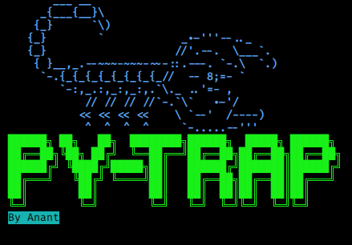

Here is a python script for generate payloads.
This script is checked on
Linux with
python version 3 and above. I make a dictonary in which number of payloads are stored in base64 form.
Clone my repo from github website by git clone command.
> git clone https://github.com/Anant1711/Py-trap.git
After that you can copy this file to your /usr/bin/ directory so that you can run this file fro anywhere on the terminal or you can run by adding python3 in command.
> python3 Pytrap.py
After that, for generate payload you have to specify payload type from
{python, python3, bash, ncat, nc, php, perl, ruby, msfvenom} , IP address [LHOST] and port number [LPORT].
Like in this example I took payload type
"nc", enter my LHOST and LPORT and hit Enter!
First it will ask you "Do you want to save your output in a file ?" it is because sometimes we have to uplaod malicious file instead of code. After that file name once you enterd your file name
it will save all outputs in seperate files, like in this we have 3 type of codes so it will save all of them in seperate files.
And if you don't choose option for saving output in file, then it will print directly all the examples on terminal.
It will show 3 commands, because we stored 3 encoded strings in shells dictionary. And after commands, it starts listening to your given PORT.
There are some more examples ....
Note: This script was written by me and i have very bad coding skills :) . So, please ignore if you find anything weird or please let me know I'll update it.